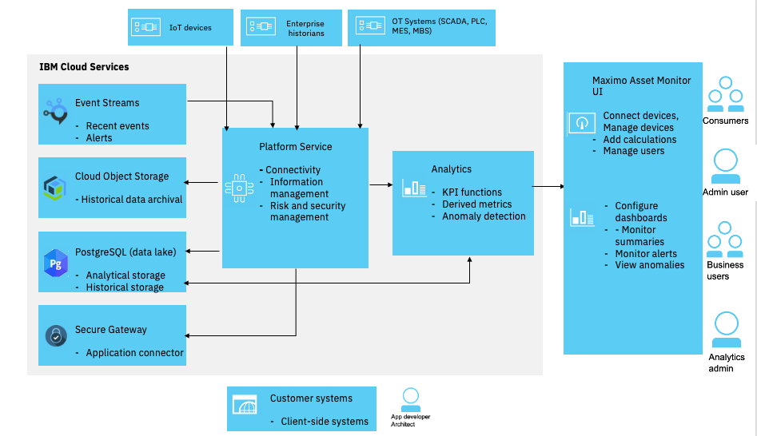

Getting Started with the IBM Maximo Asset Monitor Lab!
You can choose which exercises to complete based on your learning objectives, and the amount of time you have available. The available learning paths and exercises are listed in the table below. Each exercise includes multiple steps with directions.
| Exercise | Status | Learning Objectives | Description |
|---|---|---|---|
| 1 | Ready for Use | Connect Devices | Connect devices and define asset types. |
| 2 | Ready for Use | Monitor Assets | Create dashboards that enable you to visualize asset data using asset device data. |
| 3 | Ready for Use | Monitor Anomalies | Apply AI functions to intelligently detect anomalies at sale, troubleshoot and understand root cause. |
| 4 | Ready for Use | Create Service Requests | Resolve anomalies by creating service requests in Maximo. |
| 5 | Ready for Use | Add Image Cards | Add image cards and hover spots to see asset conditions on your asset image. |
| 6 | Ready for Use | Add Dimensions Metadata | Add dimensions for filtering assets and aggregating asset metrics on Summary Dashboards. |
| 7 | Ready for Use | Add Value Cards | Add Value cards to your dashboards. |
Students doing the exercises and Facilitators preparing for delivering the exercises should read the instructions.
See Contributing to Labs if you are interested in providing feedback by submitting enhancements or bugs. We also welcome your contributions to existing or new exercises.
Learning Paths
| Your Learning Goals | Recommended Exercises | Time Needed |
|---|---|---|
| Operational Monitoring of Assets Using Device Sensors | 1 and 2 | 2 hours |
| Anomaly Detection and Resolution | 3 and 4 | 2 hours |
| Visualize and Filter Assets | 5, 6 and 7 | 2 hours |
Overview of Maximo Asset Monitor
IBM Maximo Asset Monitor enables AI-powered remote monitoring at enterprise scale for asset maintenance and operations leaders seeking to optimize operating performance with fewer, more accurate alerts, and greater insights into what is causing them.
IBM Maximo Asset Monitor aggregates operating state data and process parameters across legacy systems, historians, IoT sensors, and other repositories to provide enterprise-wide visibility into performance. It scales quickly and easily across the enterprise. AI-powered monitoring identifies only the right alerts while helping you understand complex relationships between factors causing failures. This empowers your OT and IT teams to act with speed and confidence to understand root-cause and drive digital re-invention.
With Maximo Asset Monitor, asset sensors can be securely registered with the included IoT service to provide key performance indicators about the condition of an asset. These metrics can be combined in a pipeline with other business service data, analyzed by data science models, and then visualized in a responsive, customizable dashboard, all without requiring any coding.
Anomaly models can help reduce the “noise” that is caused by hundreds of false positive alerts using traditional threshold alerts. AI models allow clients to focus on and resolve the most critical anomalies.
Demonstration
Ask your facilitator for a demonstration of Maxiom Asset Monitor or watch this short 7 minute video demonstration
Business Benefits
Many clients have already adopted Maximo for Enterprise Asset Management (EAM), and they are realizing the benefits of extending the life of their capital investments while reducing operational and maintenance costs. They want to further leverage these assets by using the real-time operational data of those assets. For example:
-
Product owners can create new “as a service” revenue sources by using new business models enabled by IoT and thereby improving their product or service user experiences, which will increase their customers’ loyalty.
-
Operations and maintenance leaders can reduce operational maintenance and extend the life of their capital investments.
-
Reliability engineers can view historical data for forensic analysis of failure trends that allow them to prioritize design improvements to reduce warranty costs and system downtime.
-
Compliance officers can better document historical trends to demonstrate regulatory compliance and reduce the cost and risk of non-compliance.
Architecture
Here is a high level functional architecture of Maximo Asset Monitor:

Included Services
IBM Maximo Asset Monitor includes the following IBM Cloud services that help you achieve the above business benefits to scale monitoring to the enterprise:
Watson IoT Platform Connection Service
- Secure registration and management of devices and gateways using the included Connection Service
- Security of users and device
- Extension points for above and create rules on incoming sensor
- Mapping physical device types to logical interfaces that reflect the asset you want to manage
- Messaging service for ensuring data can be streamed in realtime
- Real-time rules and actions
Watson IoT Platform Analytics Service
- Data processing and analysis of historical data using the included Analytics Service
- Data cleansing and transformation
- Job scheduling
- Pipeline analysis and data loading to the data lake
- Data events and actions
- Alerts and notifications
- Data service connections
- Catalog of data functions with anomaly models to intelligently identify conditions that require attention
Monitor Service
- Out-of-the-box operational dashboards that scale to the enterprise using the included Monitor Service
- Shareable and customizable dashboards to allow users to respond, understand, and resolve alerts
- Different card types are available to be used in the dashboards: Value card, Table card, Image card, Line graph card (time series), Bar chart card, and Alert card
Database Service
- To store data for all of the above services using the included Database Service.
- Which database service is included depends on which plan has been purchased.
- This lab is based on Db2 Warehouse on Cloud.
Object Storage Service
- To store logs and files for above services using the included Cloud Object Storage Service
- For long term storage of device sensor data
- To store images